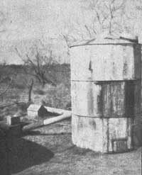
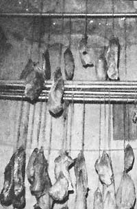
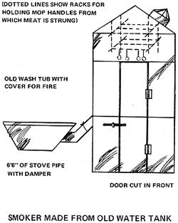
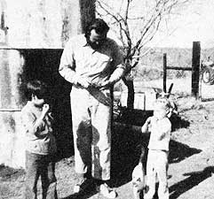

Like many homesteaders, we try to live as self-sufficiently as possible without relying on the chemical and plastic crutches of contemporary society. We still have several obstacles to overcome, of course, but we're confident that we can achieve our goal here on this 70-acre Texas homestead . . . and we're having a good time trying.
One particular solution we've worked out to solve a minor problem has generated considerable interest among our neighbors . . . so I thought I'd pass the idea along for possible use by MOTHER's readers.
The original hang-up grew out of our conviction that animal fat is not conducive to the good health of human beings. Consequently our chickens, ducks, and guineas range freely over our pasture-and our neighbor's!-thereby providing us with lean meat and (when we can find them) naturally fertile eggs. This was absolutely great . . . except that it left our breakfasts lacking the traditional ham or bacon entree which we'd relished before setting up our homestead. This "shortage" has now been filled, however, by our discovery of how to make "smoked ham" from-are you ready for this?-venison!
The breakthrough on the breakfast front occurred about two years ago, when we heard that a market about 150 miles away had developed a process for making delicious ham from naturally lean deer meat (which is a basic part of our diet). "Just what we need," I thought, and had a hindquarter of venison delivered to the firm for processing.
Ken's firebox and smoker, linked by the pipe at the left.
We waited eagerly to sample our "ham", and when it arrived three weeks later we were more than pleased. The venison had indeed been transformed into a ham-like delicacy . . . ham-like, but far superior to the real thing. The meat resembled Canadian bacon in texture (because of the absence of fat), and boasted a flavor that would have fooled the majority of hard-core pork eaters. Perhaps my enthusiasm was due in part to the fact that I hadn't tasted a ham sandwich for two years. Nevertheless, I immediately decided that I'd learn to make porkless ham a regular addition to our breakfast table.
My first move was to contact the meat market with some questions about the process. The owners, though, weren't about to divulge their secret. All I could learn was that the method involved soaking in brine followed by smoking, and that no artificial colorings or chemicals were used. As deer season approached I was still without information about measurements, times, or other details of the technique.
Well, I killed a deer at the beginning of the season and my son got another three weeks later . . . and after a month and a half's worth of oversalted, undersalted, oversmoked, and spoiled meat had been added to bean soup or fed to the chickens, we finally turned out a venison ham that was close to what we were aiming for. Something was lacking, though, and I couldn't figure out what . . . so I took a bit of our product to a local meat market, gave the proprietor a taste, asked his advice, and made one final adjustment to the procedure on the basis of his comments.
Then, as the hunting season drew to a close, I killed my last deer and put both hindquarters in brine. Two weeks later we took the finished quarters from the smoker. Triumph! We've been eating ham with eggs, ham with homemade rye bread, baked ham dishes, and just plain raw ham ever since. Now we're experimenting with ways to keep the meat without refrigeration, and have met with some success . . . but, whether we completely solve that one or not, we do know how to put lean meat on the breakfast table.
To MOTHER's readers who are forbidden to eat pork, or would like an alternative to the usual fatty ham, I offer the results of my efforts. The method that follows is based on venison, but those who have no access to wild deer could try preparing any other lean meat in the same way. It might be worth an experiment, though I can't predict the outcome. Note: Venison cured by this process is a beautiful natural red. If you substitute another meat, however, you might want to add saltpeter to the brine to preserve the color. (As many readers are aware, sodium nitrate-the "saltpeter" commercially used for this purpose-is under strong suspicion as a carcinogen. Potassium nitrate-the traditional saltpeter of home cures-doesn't share this stigma . . . yet! . . . but you may well decide that the benefit (?) of eating meat with a brighter hue isn't worth the potential risk. -MOTHER.)
You can make your own venison hams by following these four steps:
[1] PREPARE THE MEAT. The hindquarters and blackstrap about 50 percent of the animal-are the only portions that can be cured. The rest must be eaten in the usual manner.
All bone and fat (which will turn rancid in the smoker) must be removed and the muscles of the hindquarters separated out. The end result will be lean strips of backstrap and chunks of leg muscle from 3 to 5 inches in diameter.
[2] PREPARE THE BRINE. In a container large enough to allow the immersion of all the meat, mix a salt solution with a density sufficient to float a fresh egg. That's not as simple as it sounds! It would be quite natural to proceed as follows: Fill the container with the required amount of water, dump in salt, stir, add the egg and watch it sink, mix in more salt, stir, try the egg again . . . and so forth until it floats. Right? Wrong! Ham cured in such a brine will be too salty.
The correct procedure is just the reverse: Pour salt into the container and add enough water to dissolve the crystals completely. Then introduce the egg, which will stand high on the surface. Slowly add more water and stir until the egg sinks slowly and barely makes it back to the top. At that point the brine is ready.
The reason for all this hocus-pocus is that crystal salt (completely) dissolves much more slowly than you think and accurate testing "by eye" of the cure's strength is impossible when you attempt to use the first method. At the stage when the upper level of liquid is just dense enough to float an egg, there'll be undissolved salt-or a layer of stronger brine-lurking at the bottom of the container all ready to make trouble later on.
On the other hand, the concentrated salt solution used in the second procedure dilutes evenly . . . allowing you to adjust its density to the correct level (at which the egg will just barely break the surface of the water) from the top all the way to the bottom of the container.
[3] SOAK. Next, completely immerse the venison in the brine (I tie the pieces to a stick and later refasten the strings to mop handles which then suspend the future ham in the smoker) and leave it to soak in a cool place for 48 to 60 hours, depending on the flavor desired. The longer its stay in the solution, the saltier the taste.
You'll notice a reddish tinge to the water as the cure displaces the remaining blood and body fluids, and you may also find that small flecks of fat rise to the surface. Don't worry . . . this is to be expected.
[4] SMOKE. When the soaking is completed, immerse each piece of meat in boiling water just long enough to cause a whitish tinge to form on the surface. Then hang the chunks in the smoker until they're thoroughly dry . . . from three to five days, depending on the intensity of the smoke and the temperature in the smokehouse. Test the meat by slicing and squeezing it. The piece is dry enough when no juice can be seen in its center.
It's the smoking that gives each ham its fine flavor and quality and great care must be taken to observe the following directives:
[a] Burn wood of good quality in the firebox of your smokehouse. Find out which variety is popular for the purpose in your area, and try it. Above all, don't use scraps of softwood from a lumberyard . . . unless you like the taste of pine tar.
[b] What you want in the smoker is smoke, not heat. Too high a temperature will bake the meat before it can be properly cured. This means that the fire must be separated from the chamber in which the venison hangs.
I made the smoker shown in the drawing from a discarded water tank, by cutting a door in the front and suspending racks from the top to hold the mop handles from which the meat is hung. A six-inch hole in the side allows the entrance of a stovepipe which, in turn, runs six feet away to a firebox made from an old washtub.
A damper installed in the pipe further controls the smoke and heat.
To operate the smoker, I build a good fire in the tub . . . and when the blaze is quite hot, I put on a fresh log and cover the firebox. I then open the damper to allow the smoke to flow into the water tank. (Some rusted-out holes in the top of the smoking chamber provide just enough draft to fill the unit with a fragrant cloud.) Every eight hours or so I add a new chunk of fuel and recover the tub. The firebox and pipe become hot during this process, but the smoker remains just slightly warm so that the ham cures without baking.
[c] Keep the meat constantly surrounded with smoke. This is easily done by placing a heavy piece of wood on the coals at bedtime, and adding another first thing in the morning.
Meat which is allowed to hang without smoking will tend to dry instead of curing properly. If you allow your fire to burn, then go out, then burn again . . . the smokeless intervals will show up in the finished hams as pale rings interspersed through the bright red you're striving for.
We're enjoying our porkless ham very much, and hope the fruits of our experiment may prove valuable to any of you who have good luck during this year's deer season. Successful hunting!
JANSPORT CATCHES MOTHER'S JADED EYE!
What's this? Two old-timers wearing packs? On the farm? In bib overalls yet?
We just couldn't help ourselves. We were surprised. Taken aback, you might say.
For years, MOTHER's been getting an endless stream of boring press releases accompanied by boring product photos. And for years, we've been wondering why in heaven's name someone, somewhere, couldn't come up with a different angle. Something, you know... interesting. But no. The same old releases just kept coming, with headlines like: "CLAYBORN FITZHUGH ANNOUNCES MIRACLE TOOTHPICK!" and "NEW SCIENTIFIC SPONGE ABSORBS 29.73% MORE WATER!"
Ho hum.
But the other day, we opened a press packet from JanSport and out spilled the two ridiculous photos you see here... and it was a mighty refreshing change to say the least.
So what the heck. In the name of innovation, imagination, and just plain fun, we're giving JanSport (Paine Field Industrial Park, Building 316, Everett, Wash. 98304) a free plug. Any company with such good-hearted grin on its corporate face had got to have something going for it.
|
 Ken's firebox and smoker, linked by the pipe at the left. |
 Curing venison dangles from racks inside the smokehouse. |
 The Joen's smokehouse design, one of many possibilities. |
|
 Christopher and Christine sample bits of venison ""ham"". |
|
|